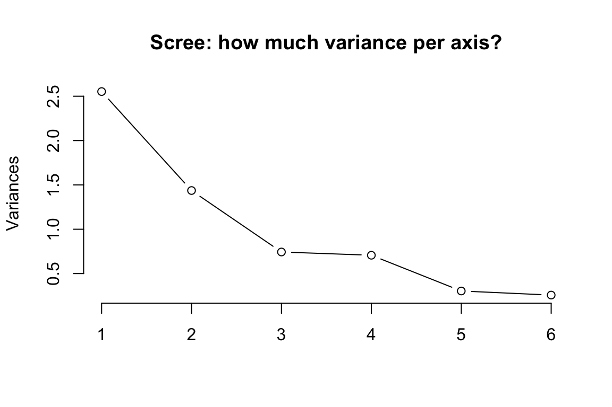
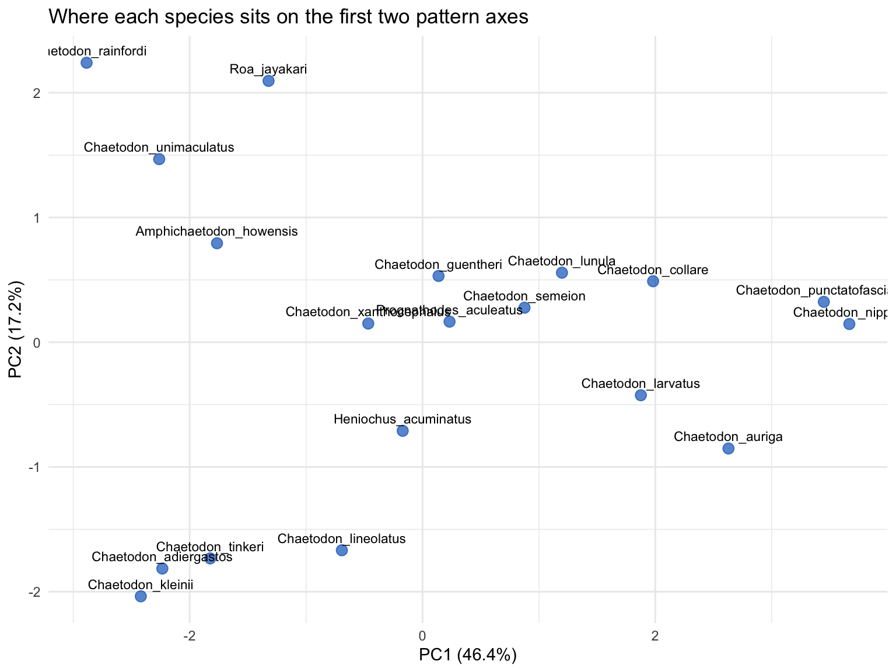
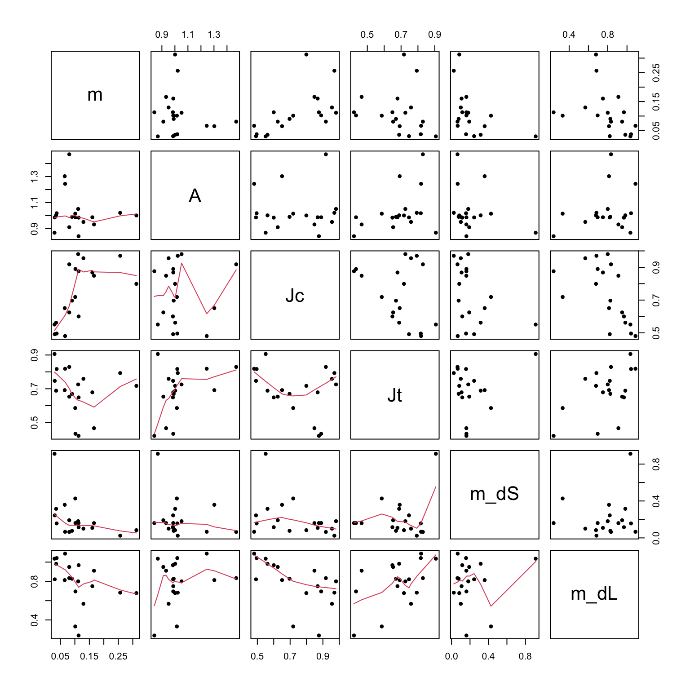
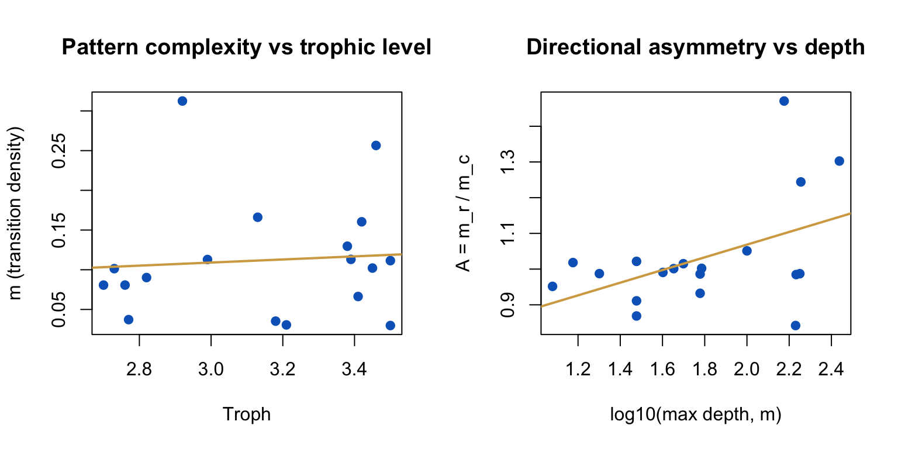
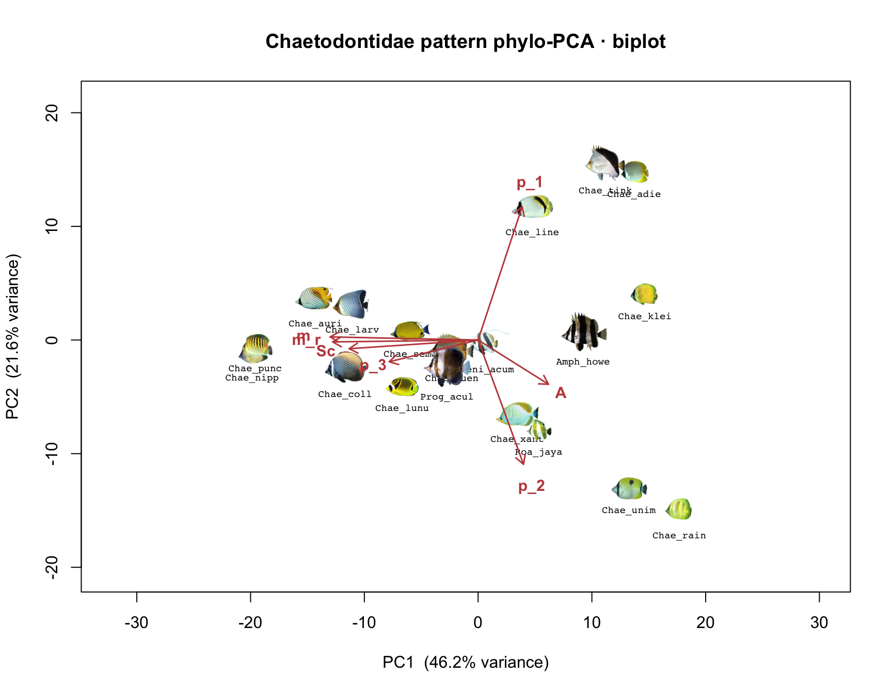
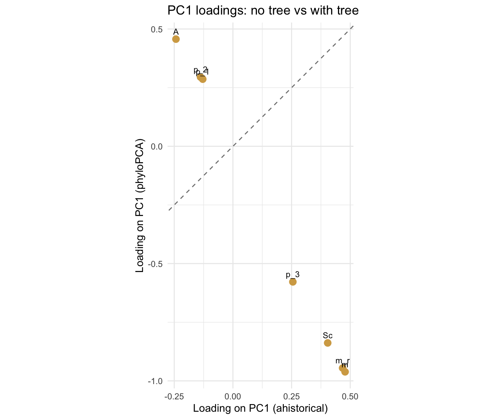
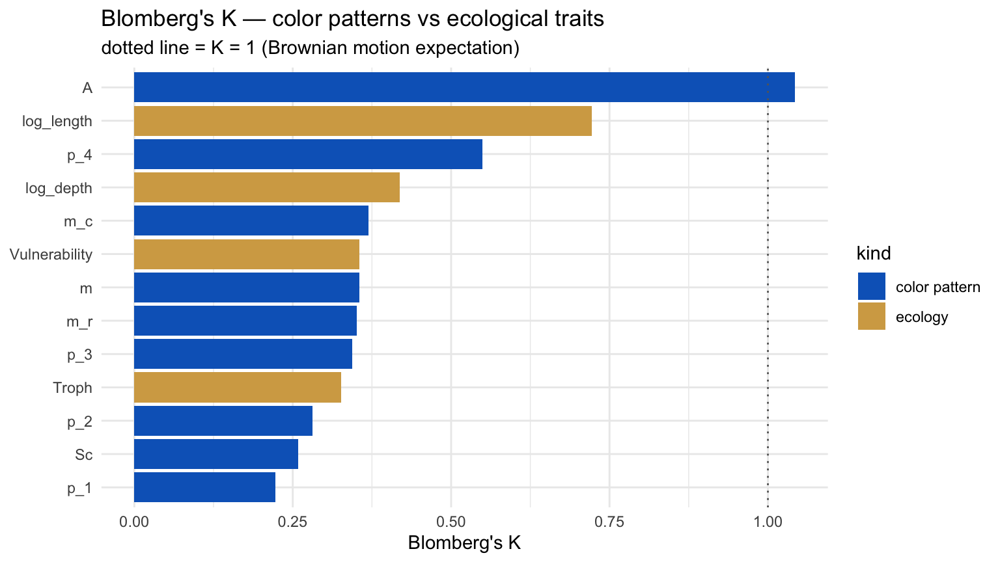
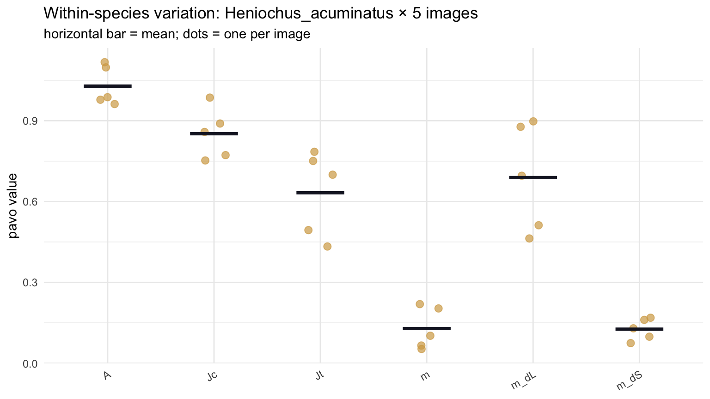

library(pavo)
library(ape)
library(ggplot2)
set.seed(2026) # makes classify() reproducible
bundle <- "chaetodontidae-mini-bundle" # your own family: e.g. "acanthuridae-mini-bundle"
# Loads the pavo pipeline helpers AND a pair of bundle-loading utilities:
# bundle_tree_path() — find the family's *-mini-tree.tre by glob, so this
# worksheet works on any family's exported bundle
# without editing the filename.
# read_tree_auto() — auto-detect Newick vs NEXUS (different families'
# source trees use different formats; FishView ships
# them as-is).
source("scripts/measurement-error.R")Demo 8 — Worksheet
EEB 187 · Wednesday May 20, 2026
Before you start
Working directory: Open this Quarto project (or set setwd()) so that the unzipped bundle folder chaetodontidae-mini-bundle/ sits directly inside your working dir. Every chunk below uses relative paths.
You can paste chunks one at a time into the RStudio Console. The companion R script scripts/walkthrough.R is the same chunks without prose, if you’d rather stay out of the rendered HTML.
The big question
Frédérich et al. 2026 told us surgeonfish color patterns have weak phylogenetic signal — color changes much faster than expected under Brownian motion, and convergent patterns crop up across distantly related lineages. The paper coded patterns as binary motif presence/absence. Today you’ll ask the same question with continuous pattern statistics from pavo, on your own family, and you’ll also ask whether your answer survives realistic measurement noise.
Three parts, building on each other:
- Part 1 (this section, ~25 min): Pretend the tree doesn’t exist. Just describe the standing diversity of pattern statistics across 20 species.
- Part 2 (~25 min): Bring the tree back. Do the same statistics with phylogenetic correction. Compare.
- Part 3 (~25 min): Stop pretending one image is the truth. Estimate measurement error from a 5-image stack of one species, then re-do Parts 1 & 2 200 times with that noise injected. Which conclusions survive?
Part 1 — Standing diversity (ignore the tree)
1.1 Setup
pavo does the color + pattern stats. ape handles the tree (we won’t use it until Part 2 — but we’ll load it now so we know it loads). set.seed() matters because pavo::classify() is k-means under the hood, and k-means is non-deterministic.
1.2 Inventory the bundle
tree <- read_tree_auto(bundle_tree_path(bundle))
# Source trees often carry specimen/voucher suffixes on tip labels
# (e.g., Pomacanthus_imperatorF490M998 or Chaetodon_auriga_PW648).
# Normalize every tip label to its bare Genus_species binomial so the
# rest of the worksheet can compare to picked species names directly.
tree <- normalize_tree_tips(tree)
cat("Tree now has", Ntip(tree), "tips, all in Genus_species form.\n")Tree now has 109 tips, all in Genus_species form.picked_species <- readLines(file.path(bundle, "picked_species.txt"))
# After normalization, picked_species and tip labels share a common
# vocabulary. The map is identity for matched species; we keep the
# `species_to_tip` name for downstream compatibility.
species <- intersect(picked_species, tree$tip.label)
dropped <- setdiff(picked_species, tree$tip.label)
if (length(dropped)) {
message("Dropping ", length(dropped),
" species with no tip on the tree: ",
paste(dropped, collapse = ", "))
}
species_to_tip <- setNames(species, species)
# Sanity: every kept species has an image dir + a matching tree tip
stopifnot(all(file.exists(file.path(bundle, "images", species))))
stopifnot(all(species_to_tip %in% tree$tip.label))
length(species)[1] 19head(species)[1] "Amphichaetodon_howensis" "Chaetodon_adiergastos"
[3] "Chaetodon_auriga" "Chaetodon_collare"
[5] "Chaetodon_guentheri" "Chaetodon_kleinii" # README names the error-species (the species with 5 images) — read it now
readLines(file.path(bundle, "README.txt"), n = 25) [1] "Demo 8 mini-bundle — chaetodontidae"
[2] "Generated: 2026-05-18T14:38:50"
[3] "Saved by: Admin"
[4] ""
[5] "Species selected in picker: 20"
[6] "Species actually shipped: 20"
[7] "Species SKIPPED (no image): 0"
[8] "Genera shipped: 5"
[9] "Error-species (5-image stack): Heniochus_acuminatus"
[10] ""
[11] "Image sources: families/chaetodontidae/analysis/{oriented,segmented}/<Species>/<file>.png"
[12] "Tree source: chronogram.tre (full tree; use picked_tip_labels.txt + ape::keep.tip() to prune)"
[13] ""
[14] "Worksheet expectations:"
[15] " bundle <- \"data/chaetodontidae\""
[16] " error_species <- \"Heniochus_acuminatus\""
[17] ""
[18] "Image-selection policy: this bundle ONLY ships images the admin"
[19] "explicitly picked (via 🖼️ Pick images on the mini-bundle picker)"
[20] "or starred (via ★ on a species review page). No alphabetical"
[21] "fallback — some images are low-quality and should not auto-ship."
[22] ""
[23] "Notes:"
[24] " Chaetodon auriga: shipped images[0]=Chaetodon_auriga_FishWise_006157F000009W000037.png; 2 other pick(s) recorded in YAML for future bootstrap."The README names one species — call it the error-species — that has a stack of 5 images instead of 1. We’ll parse the name out of the README in the next chunk so the rest of the worksheet doesn’t depend on a hard-coded string.
1.3 Run pavo on each species (the slow chunk)
We’ll use one image per species — images/<species>/exemplar.png — and for the error-species we’ll just grab img-1.png and treat it like the rest. For each image we classify the pixels into 4 pattern classes (k-means in RGB), then run adjacent to get pattern statistics from pixel-adjacency counts.
adjacent() reports two flavors of pattern stat:
- Structural stats (
m,A,Jc,Jt) — built from class labels only, no spectra needed. - Color-distance stats (
m_dS,m_dL) — boundary strengths in chromatic and luminance space, which require a coldists table telling pavo how far apart any pair of color classes is.
We build that coldists table the lightweight way (no full visual model): for each pair of color classes we compute opponent-color Euclidean distance from the class-mean RGBs. That’s calc_euc_lum_dists() — same helper Demo 6 used, lifted into scripts/measurement-error.R so it’s defined once.
There’s also a white-background gotcha to handle. FishView-exported bundle images have the fish painted onto a white field, so when classify() clusters the pixels into 4 classes, one of those classes will be “white” — and an enormous fraction of adjacent()’s pixel transitions will land at the fish/white boundary rather than inside the fish. Without masking, m, A, and the boundary-strength metrics get swamped by background noise. The pipeline identifies the whitest class (highest R+G+B sum) and passes it to adjacent() as bkgID with exclude = "background", so only fish-on-fish transitions count.
# Pull the error-species name out of the README so the worksheet stays valid
# across rebuilds of the bundle.
readme <- readLines(file.path(bundle, "README.txt"))
err_line <- grep("^Error-species", readme, value = TRUE)[1]
error_species <- if (is.na(err_line) || grepl("\\(none\\)|NONE|none", err_line)) NA_character_ else
trimws(sub("\\s*\\(.*", "",
sub(".*?:\\s*", "", err_line)))
cat("Error-species in this bundle:",
if (is.na(error_species)) "NONE" else error_species, "\n")Error-species in this bundle: Heniochus_acuminatus pick_image <- function(sp) {
if (!is.na(error_species) && sp == error_species) {
file.path(bundle, "images", sp, "img-1.png")
} else {
file.path(bundle, "images", sp, "exemplar.png")
}
}
# This takes ~30-60s for 20 species. pavo_pipeline_one_image() returns
# a 1-row data frame with the 6 columns we keep: m, A, Jc, Jt, m_dS, m_dL.
results <- lapply(species, function(sp) {
row <- pavo_pipeline_one_image(pick_image(sp))
row$species <- sp
row
})
adj_df <- do.call(rbind, results)
dim(adj_df)[1] 19 7colnames(adj_df)[1] "m" "A" "Jc" "Jt" "m_dS" "m_dL" "species"The six columns we kept:
| Column | What it means |
|---|---|
m |
Pattern complexity: probability that two adjacent pixels belong to different color classes. 0 = solid color, 1 = maximally busy. |
A |
Directional aspect ratio: m_r / m_c (horizontal vs vertical transition density). A row (horizontal-neighbor) transition is one you’d cross scanning left-to-right; lots of these come from vertical bars. A > 1 = bar-y, A < 1 = stripe-y, A = 1 = isotropic. |
Jc |
Chromatic Jaccard complexity — how much of the available palette the pattern actually uses. |
Jt |
Transition Jaccard complexity — how many of the possible color-pair transitions are actually realized. |
m_dS |
Mean chromatic boundary strength: average opponent-color distance across pattern edges. High m_dS = sharp color contrasts at the boundaries. |
m_dL |
Mean luminance boundary strength: average light/dark step across pattern edges. High m_dL = sharp dark/light contrasts. |
We dropped pavo’s p_1–p_4 (color-class coverage proportions, which sum to 1 so encode less than 4 independent pieces of information), Sc/St (simple complexities, mostly redundant with m), and m_r/m_c (already summarized by A). What remains is six full-rank, biologically distinct pattern descriptors — exactly the set used in Alfaro et al. 2019’s Chaetodontidae color analysis.
1.4 Build the species × pattern-stat matrix
keep <- c("m", "A", "Jc", "Jt", "m_dS", "m_dL")
traits <- adj_df[, c("species", keep)]
rownames(traits) <- traits$species
traits$species <- NULL
head(traits, 4) m A Jc Jt m_dS
Amphichaetodon_howensis 0.08071636 1.4706281 0.9180645 0.8293751 0.06439516
Chaetodon_adiergastos 0.02976929 0.8687562 0.5509116 0.9061642 0.91149062
Chaetodon_auriga 0.16611328 0.9322608 0.8483285 0.4664477 0.16017187
Chaetodon_collare 0.16038735 0.9873579 0.8681632 0.6788742 0.10838809
m_dL
Amphichaetodon_howensis 0.8339747
Chaetodon_adiergastos 1.0355672
Chaetodon_auriga 0.9109192
Chaetodon_collare 0.7504004Six pattern variables, 20 species. Save this matrix — Parts 2 and 3 will both read it.
1.5 Principal component analysis
PCA on a centered + scaled matrix because our variables are on very different units (proportions vs. probabilities vs. asymmetry).
pc <- prcomp(traits, scale. = TRUE)
summary(pc)Importance of components:
PC1 PC2 PC3 PC4 PC5 PC6
Standard deviation 1.5977 1.1986 0.8622 0.8406 0.55085 0.5073
Proportion of Variance 0.4254 0.2394 0.1239 0.1178 0.05057 0.0429
Cumulative Proportion 0.4254 0.6649 0.7888 0.9065 0.95710 1.0000Look at the Proportion of Variance row. If PC1 + PC2 together explain ≥ 60 %, two axes are a usable summary of the standing diversity.
plot(pc, type = "l", main = "Scree: how much variance per axis?")
To make the PCA actually readable for a 19-species fish family, we replace abstract text labels with the exemplar image of each species, then drop a short 4-letter-genus + 4-letter-species label underneath. Define a helper once — we’ll re-use it for both the ahistorical PCA biplot here and the phylo-PCA biplot in Part 2.
abbr_sp <- function(x) {
parts <- strsplit(x, "_")
vapply(parts, function(p) {
g <- substr(p[1], 1, 4)
s <- if (length(p) >= 2) substr(p[2], 1, 4) else ""
paste0(g, "_", s)
}, character(1))
}
img_path_for <- function(sp_dir, bundle) {
c1 <- file.path(bundle, "images", sp_dir, "exemplar.png")
c2 <- file.path(bundle, "images", sp_dir, "img-1.png")
if (file.exists(c1)) c1 else c2
}
# scores: n × 2 matrix of PC1/PC2 scores, rownames = score keys
# loadings: p × 2 matrix of variable loadings (NULL to skip arrows)
# var_pct: c(PC1_pct, PC2_pct), already in percent
# bundle: path to mini-bundle
# score_to_dir: optional named char mapping rownames(scores) -> image dir name
plot_pca_images <- function(scores, loadings = NULL, var_pct, bundle,
score_to_dir = NULL, main = "PCA",
img_frac = 0.085) {
scores <- as.matrix(scores[, 1:2, drop = FALSE])
keys <- rownames(scores)
dirs <- if (is.null(score_to_dir)) keys else score_to_dir[keys]
labels <- abbr_sp(dirs)
imgs <- lapply(dirs, function(d) png::readPNG(img_path_for(d, bundle)))
xr <- range(scores[, 1]); yr <- range(scores[, 2])
pad <- 0.18
xr2 <- xr + c(-pad, pad) * diff(xr)
yr2 <- yr + c(-pad, pad) * diff(yr)
plot(NA, xlim = xr2, ylim = yr2, asp = 1,
xlab = sprintf("PC1 (%.1f%% variance)", var_pct[1]),
ylab = sprintf("PC2 (%.1f%% variance)", var_pct[2]),
main = main)
img_w <- diff(xr2) * img_frac
for (i in seq_along(imgs)) {
h_w <- dim(imgs[[i]])[1] / dim(imgs[[i]])[2]
img_h <- img_w * h_w
rasterImage(imgs[[i]],
scores[i, 1] - img_w / 2, scores[i, 2] - img_h / 2,
scores[i, 1] + img_w / 2, scores[i, 2] + img_h / 2)
text(scores[i, 1], scores[i, 2] - img_h / 2 - diff(yr2) * 0.018,
labels[i], cex = 0.6, family = "mono")
}
if (!is.null(loadings)) {
L <- as.matrix(loadings[, 1:2, drop = FALSE])
arrow_scale <- 0.85 *
min(diff(xr), diff(yr)) / 2 /
max(sqrt(L[, 1]^2 + L[, 2]^2))
arrows(0, 0, L[, 1] * arrow_scale, L[, 2] * arrow_scale,
length = 0.1, col = "#c14a4a", lwd = 1.5)
text(L[, 1] * arrow_scale * 1.18, L[, 2] * arrow_scale * 1.18,
rownames(L), col = "#c14a4a", font = 2, cex = 0.95)
}
invisible(NULL)
}var_pct <- round(100 * summary(pc)$importance[2, 1:2], 1)
plot_pca_images(
scores = pc$x,
loadings = pc$rotation,
var_pct = var_pct,
bundle = bundle,
main = "Chaetodontidae pattern PCA · biplot (no tree)"
)
The arrows show which pavo variables drive each axis. Long arrows = high contribution. Arrows pointing the same direction = correlated variables (we’ll quantify that in 1.6). The fish thumbnails let you eyeball why a species sits where it does — species at the right end of PC1 share a visible pattern feature, species at the bottom share a different one.
plot_pca_images(
scores = pc$x,
loadings = NULL,
var_pct = var_pct,
bundle = bundle,
main = "Where each species sits on PC1 vs PC2 (no arrows)"
)
Note
Read this plot: Each fish thumbnail is one species in pattern-statistic space. Two thumbnails close together have similar pavo stats — they don’t have to be closely related (we haven’t told the plot anything about the tree). Two thumbnails far apart have different pattern statistics. The 4-letter genus + 4-letter species labels underneath let you cross-reference quickly.
1.6 Bivariate relationships among pavo variables
Are any pavo variables strongly correlated? If yes, the PCA above is partly redundant — we have fewer truly independent pattern axes than we have variables.
cor_mat <- cor(traits)
round(cor_mat, 2) m A Jc Jt m_dS m_dL
m 1.00 -0.13 0.61 -0.16 -0.45 -0.36
A -0.13 1.00 0.01 0.37 -0.23 0.22
Jc 0.61 0.01 1.00 -0.31 -0.39 -0.58
Jt -0.16 0.37 -0.31 1.00 0.21 0.52
m_dS -0.45 -0.23 -0.39 0.21 1.00 0.12
m_dL -0.36 0.22 -0.58 0.52 0.12 1.00Visualize with a quick pairs plot across all six variables:
pairs(traits[, c("m", "A", "Jc", "Jt", "m_dS", "m_dL")],
lower.panel = panel.smooth, pch = 19, cex = 0.7)
And run two named bivariate tests so the class can talk about them:
# fit_1: does directional aspect ratio track overall pattern complexity?
fit_1 <- lm(A ~ m, data = traits)
summary(fit_1)$coefficients Estimate Std. Error t value Pr(>|t|)
(Intercept) 1.0603542 0.06487396 16.3448355 7.868612e-12
m -0.2775064 0.49493749 -0.5606897 5.823242e-01summary(fit_1)$r.squared[1] 0.01815676# fit_2: do chromatic and luminance boundary strengths co-vary?
# High m_dS at edges -> usually high m_dL too?
fit_2 <- lm(m_dL ~ m_dS, data = traits)
summary(fit_2)$coefficients Estimate Std. Error t value Pr(>|t|)
(Intercept) 0.7627162 0.07702012 9.9028180 1.786217e-08
m_dS 0.1355072 0.27146440 0.4991711 6.240568e-01summary(fit_2)$r.squared[1] 0.01444544fit_2 is the interesting one. Chromatic and luminance boundary strengths can be decoupled — a fish can have crisp color contrasts that are isoluminant (think the iridescent yellow-and-blue line on a wrasse). If the slope is steeply positive, chromatic and luminance edges scale together in this family; if it’s flat, the two kinds of edge information are biologically independent and you have two real axes of pattern boundary information instead of one redundant one.
1.7 What does this tell us so far?
You’ve described the standing diversity of pattern statistics in Chaetodontidae. The PCA, correlation matrix, and bivariate fits are doing the work of saying:
- how many pattern axes the family actually varies along (PCA),
- which pavo variables co-vary (correlation,
pairs()), and - whether any pair of pavo measurements has a meaningful relationship (
lm()).
What this analysis cannot tell you yet is whether any of these relationships are real biology or whether they’re artifacts of phylogeny — closely related species sharing pattern statistics for the same reason they share genes. That’s Part 2.
1.8 Ecological traits — pavo patterns vs how the fish lives
So far every variable has come out of pavo. The bundle also ships a small ecological-trait CSV harvested from FishBase, so we can ask whether pattern variation tracks how the fish lives, not just what its photo looks like.
eco <- read.csv(file.path(bundle, "species_traits.csv"))
head(eco) species Troph DepthRangeDeep Length Vulnerability
1 Amphichaetodon_howensis 2.76 150 18 16.68
2 Chaetodon_adiergastos 3.50 30 20 15.01
3 Chaetodon_auriga 3.13 60 23 11.53
4 Chaetodon_collare 3.42 20 18 14.21
5 Chaetodon_guentheri 2.82 40 18 14.21
6 Chaetodon_kleinii 3.18 61 15 12.01Four FishBase traits, all continuous, all on different scales:
| Column | Meaning | Units |
|---|---|---|
Troph |
Trophic level (food-web position): 2 ≈ herbivore, 4+ ≈ piscivore | dimensionless |
DepthRangeDeep |
Maximum reported depth | metres (log-transformed for analysis) |
Length |
Maximum reported body length | cm (log-transformed for analysis) |
Vulnerability |
FishBase intrinsic-vulnerability index (life-history risk) | 0–100 |
Join to the pavo trait matrix, dropping any species the bundle had a trait row for but no image:
combined <- merge(
data.frame(species = rownames(traits), traits),
eco, by = "species", all.x = TRUE
)
combined$log_depth <- log10(combined$DepthRangeDeep)
combined$log_length <- log10(combined$Length)
rownames(combined) <- combined$species
# Quick NA check — FishBase doesn't have Troph for every species
colSums(is.na(combined[, c("Troph", "log_depth", "log_length", "Vulnerability")])) Troph log_depth log_length Vulnerability
1 0 0 0 Two named bivariate tests with concrete biological questions:
# Do herbivores have less complex patterns than piscivores?
fit_eco_1 <- lm(m ~ Troph, data = combined)
summary(fit_eco_1)$coefficients Estimate Std. Error t value Pr(>|t|)
(Intercept) 0.05058300 0.19656176 0.257339 0.8001974
Troph 0.01950374 0.06210986 0.314020 0.7575630summary(fit_eco_1)$r.squared[1] 0.006125286# Does pattern directional asymmetry change with depth (light environment)?
fit_eco_2 <- lm(A ~ log_depth, data = combined)
summary(fit_eco_2)$coefficients Estimate Std. Error t value Pr(>|t|)
(Intercept) 0.7132867 0.14803734 4.818289 0.0001605387
log_depth 0.1776556 0.08112189 2.189983 0.0427583270summary(fit_eco_2)$r.squared[1] 0.2200413par(mfrow = c(1, 2))
plot(m ~ Troph, data = combined, pch = 19, col = "#0a66c2",
main = "Pattern complexity vs trophic level",
xlab = "Troph", ylab = "m (transition density)")
abline(fit_eco_1, col = "#d4a853", lwd = 2)
plot(A ~ log_depth, data = combined, pch = 19, col = "#0a66c2",
main = "Directional asymmetry vs depth",
xlab = "log10(max depth, m)", ylab = "A = m_r / m_c")
abline(fit_eco_2, col = "#d4a853", lwd = 2)
par(mfrow = c(1, 1))Finally, how well does the pavo PC1 — the headline axis of pattern variation — predict ecology?
pc_scores <- pc$x[combined$species, "PC1"]
ecology_cor <- sapply(c("Troph", "log_depth", "log_length", "Vulnerability"),
function(v) cor(pc_scores, combined[, v], use = "complete.obs"))
round(ecology_cor, 3) Troph log_depth log_length Vulnerability
-0.017 0.007 -0.030 0.012 Correlations near 0 mean “PC1 has nothing to say about ecology — pattern axes are independent of how the fish lives.” Correlations near ±0.5 mean the headline pattern axis is doing real ecological work.
These are ahistorical correlations — they ignore phylogeny exactly like the rest of Part 1. Part 2’s §2.9 redoes them with PGLS so you can see how much shared ancestry was inflating (or hiding) the apparent ecology effect.
1.9 Save Part 1 outputs
Parts 2 and 3 will both want the trait matrix + the ecology join:
dir.create("results", showWarnings = FALSE)
saveRDS(traits, "results/part1-traits.rds")
saveRDS(pc, "results/part1-pca.rds")
saveRDS(cor_mat, "results/part1-cor.rds")
saveRDS(species_to_tip, "results/part1-species-to-tip.rds")
saveRDS(combined, "results/part1-combined.rds")Build your group’s bundle · in-class, ~15 min
You’ve now seen Part 1 work end-to-end on a bundle the lecturer pre-built for Chaetodontidae. The rest of the demo runs on a bundle your group builds from scratch, using your judgment about which species are worth analyzing and which photographs are worth trusting.
A — Log into FishView for your family
Same code you used for Demo 7:
| Group | Family | Code |
|---|---|---|
| 1 | Balistoidea (triggerfishes) | trigger-2026 |
| 2 | Pomacanthidae (angelfishes) | angel-2026 |
| 3 | Scarinae (parrotfishes) | parrot-2026 |
| 4 | Cirrhilabrini (fairy wrasses) | fairy-2026 |
| 5 | Acanthuridae (surgeonfishes) | tang-2026 |
| 6 | Hypsigenyinae (hogfishes) | hog-2026 |
| 7 | Halichoerine (Coris-allies wrasses) | coris-2026 |
Open http://164.67.78.200:5052/ and log in. You’ll land on your family’s dashboard.
B — Pick at least 15 species across ≥5 genera
Browse the species table. The picker visually marks species that Frédérich et al. 2026 used in their analysis — those are reasonable starting choices, but you don’t have to use them. Pick species that:
- Span ≥ 5 distinct genera (the picker shows a running genus count — watch that)
- Have enough usable photographs that you’ll be able to choose one good exemplar each
- Together cover ≥ 15 species (more is fine — bigger bundle = tighter K estimates)
Warning
Resist the urge to just check the first 15 boxes. The choices you make here are the analysis. A bundle of 15 Acanthurus species and one Naso won’t tell you anything new about Acanthuridae diversity — you’d be measuring within-genus variation, not across-family variation.
C — Pick the exemplar image for each species
Click into each starred species → review page. Star one image as the exemplar. Your judgment criteria:
- Lateral view (fish facing left or right, full body visible)
- In focus, well-exposed, not heavily edited
- Representative of “what the species looks like” — not a juvenile, not a rare morph, not a mid-flash display
Same UI as Demo 7’s Part 2 review: include/exclude/exemplar buttons, optional reorient if the fish is tilted. If a species has no good photograph, un-check it from your bundle list and pick a different species.
D — Mark ONE species as the error-species and pick 5 of its images
Choose one of your starred species to be the error-species — a species with at least 5 different usable photographs, because Part 3 uses them to estimate measurement noise. Click that species’s “Make error-species” toggle on the review page.
For the error-species, instead of starring just one exemplar, mark 5 images — these become img-1.png through img-5.png. Pick five that are all valid representations of the same fish but vary in angle, lighting, or photographer — that variation IS the noise you’re trying to characterize.
E — Export the bundle
Back on the dashboard, hit Export Bundle. The button refuses to fire if:
- Fewer than 15 species starred
- Fewer than 5 distinct genera
- Any starred species lacks an exemplar
- No error-species marked
- Error-species has fewer than 5 images selected
When all checks pass you get <family>-mini-bundle.zip (e.g. acanthuridae-mini-bundle.zip).
F — Bring it back to R
Drop the ZIP into the same working directory you’ve been using for the Chaetodontidae walkthrough, then:
unzip("acanthuridae-mini-bundle.zip") # or your family's filename
bundle <- "acanthuridae-mini-bundle" # switch bundle pathThat’s it. Re-run §1.2 onward. Every chunk only depends on the bundle variable — your family’s data flows through the same pipeline.
The plots you produce from your bundle are your group’s contribution to the demo. Keep re-running this same worksheet against this bundle for Parts 2 and 3, and use the figures + numbers you generate in your writeup.
Part 2 — Phylogenetic correction (bring the tree back)
In Part 1 we treated the 20 species as 20 independent observations. They’re not. Closely related species share trait values for the same reason they share genes — common ancestry. Every PCA loading and every lm() slope from Part 1 is potentially inflated (or deflated) by this non-independence.
Three corrections, in order:
- phyloPCA — PCA that uses the tree’s variance-covariance matrix to weight the data, so independent evolutionary change drives the axes (not just shared history).
- PGLS — generalized least squares where residuals are allowed to be correlated according to the tree. This is the bivariate-
lmanalog of phyloPCA. - Per-variable phylogenetic signal — Blomberg’s K and Pagel’s λ. Same idea as Demo 7, but applied to every pavo variable.
2.1 Match the trait matrix to the tree
library(phytools)
library(caper)
# These should already be in memory from Part 1; re-load if you've restarted R.
if (!exists("traits")) traits <- readRDS("results/part1-traits.rds")
if (!exists("species_to_tip")) species_to_tip <- readRDS("results/part1-species-to-tip.rds")
if (!exists("tree")) tree <- read_tree_auto(bundle_tree_path(bundle))
# Re-key the trait matrix from directory names to tree-tip labels.
# (e.g. row "Chaetodon_auriga" -> "Chaetodon_auriga2"; the picker built this map.)
rownames(traits) <- species_to_tip[rownames(traits)]
# Keep only tips that have data; reorder data rows to tree-tip order
tree <- keep.tip(tree, rownames(traits))
traits <- traits[tree$tip.label, ]
stopifnot(all(rownames(traits) == tree$tip.label))
length(tree$tip.label)[1] 19stopifnot is the assertion-gate: if rows and tips are out of order, the rest of Part 2 silently gives nonsense answers. Better to crash here than to publish a wrong K.
2.2 Phylogenetic PCA
phytools::phyl.pca fits the same kind of PCA you ran in Part 1, but the centering and covariance step uses the tree’s expected variance-covariance under Brownian motion (optionally with λ-scaling).
Our 6-variable pattern descriptor set is full-rank: no variable is algebraically determined by the others (which was the trap with the older p_1..p_4 + m_r,m_c,A set). So phyl.pca can just run.
phy_pc <- phyl.pca(tree, traits, method = "lambda", mode = "corr")
summary(phy_pc)Importance of components:
PC1 PC2 PC3 PC4 PC5
Standard deviation 1.597713 1.1985736 0.8621544 0.8405963 0.55084805
Proportion of Variance 0.425448 0.2394298 0.1238850 0.1177670 0.05057226
Cumulative Proportion 0.425448 0.6648778 0.7887629 0.9065299 0.95710217
PC6
Standard deviation 0.50733321
Proportion of Variance 0.04289783
Cumulative Proportion 1.00000000Read the new Proportion of Variance row alongside Part 1’s. If the percentages shift, the tree was structuring the original axes.
# Tree-tip rownames -> species image-dir names
tip_to_dir <- setNames(names(species_to_tip), species_to_tip)
# Variance explained by each phylo-PC
phy_var_pct <- round(100 * diag(phy_pc$Eval) / sum(diag(phy_pc$Eval)), 1)
plot_pca_images(
scores = phy_pc$S,
loadings = phy_pc$L,
var_pct = phy_var_pct[1:2],
bundle = bundle,
score_to_dir = tip_to_dir,
main = "Chaetodontidae pattern phylo-PCA · biplot"
)
TipTake-home from this plot
The visible signature here is the dense cluster of Chaetodon thumbnails near the origin with the non-Chaetodon genera (Roa, Heniochus, Amphichaetodon, Prognathodes) splayed around the perimeter. That’s the multivariate hallmark of strong phylogenetic structure in this pavo trait space: closely related species (most of our Chaetodon sample) occupy similar positions, while genera that branch deeper off the family tree push outward on the principal axes.
That’s a different question from per-variable Blomberg’s K (which we get to in §2.5), but it’s the multivariate version of the same idea: in this 19-species Chaetodontidae sample, pavo color-pattern statistics carry a clear signal of shared ancestry.
2.3 How did the loadings change?
The most direct comparison: each pavo variable’s contribution to PC1, with and without the tree.
ahist_pc <- readRDS("results/part1-pca.rds")
common_vars <- intersect(rownames(ahist_pc$rotation), rownames(phy_pc$L))
load_df <- data.frame(
variable = common_vars,
ahistorical_PC1 = ahist_pc$rotation[common_vars, "PC1"],
phyloPCA_PC1 = phy_pc$L[common_vars, 1]
)
print(round(load_df[, -1], 3)) ahistorical_PC1 phyloPCA_PC1
m 0.464 0.742
A -0.149 -0.238
Jc 0.519 0.830
Jt -0.392 -0.626
m_dS -0.331 -0.529
m_dL -0.479 -0.765ggplot(load_df, aes(ahistorical_PC1, phyloPCA_PC1, label = variable)) +
geom_abline(slope = 1, intercept = 0, linetype = "dashed", color = "grey50") +
geom_point(size = 3, color = "#d4a853") +
geom_text(vjust = -0.8, size = 3) +
labs(title = "PC1 loadings: no tree vs with tree",
x = "Loading on PC1 (ahistorical)",
y = "Loading on PC1 (phyloPCA)") +
theme_minimal() +
coord_equal()
Note
Read this plot. Variables on the dashed y = x line have identical loadings either way — phylogeny didn’t change them. Variables far from the line are loadings that were being driven (or masked) by shared ancestry.
2.4 PGLS — bivariate tests with phylogenetic correction
The same two lm() fits from Part 1, but now allowing the residuals to be correlated according to the tree’s Brownian-motion expectation. We use caper::pgls with lambda = "ML", which fits the optimal amount of phylogenetic correction.
traits_df <- data.frame(species = rownames(traits), traits)
cd <- comparative.data(phy = tree, data = traits_df,
names.col = "species", vcv = TRUE)
pgls_1 <- pgls(A ~ m, data = cd, lambda = "ML")
pgls_2 <- pgls(m_dL ~ m_dS, data = cd, lambda = "ML")
summary(pgls_1)
Call:
pgls(formula = A ~ m, data = cd, lambda = "ML")
Residuals:
Min 1Q Median 3Q Max
-0.04236 -0.01721 -0.01167 0.01018 0.05691
Branch length transformations:
kappa [Fix] : 1.000
lambda [ ML] : 1.000
lower bound : 0.000, p = 0.0034778
upper bound : 1.000, p = 1
95.0% CI : (0.529, NA)
delta [Fix] : 1.000
Coefficients:
Estimate Std. Error t value Pr(>|t|)
(Intercept) 1.134396 0.087138 13.0184 2.866e-10 ***
m -0.151519 0.329342 -0.4601 0.6513
---
Signif. codes: 0 '***' 0.001 '**' 0.01 '*' 0.05 '.' 0.1 ' ' 1
Residual standard error: 0.02666 on 17 degrees of freedom
Multiple R-squared: 0.0123, Adjusted R-squared: -0.0458
F-statistic: 0.2117 on 1 and 17 DF, p-value: 0.6513 summary(pgls_2)
Call:
pgls(formula = m_dL ~ m_dS, data = cd, lambda = "ML")
Residuals:
Min 1Q Median 3Q Max
-0.083201 -0.013071 0.003897 0.023666 0.048266
Branch length transformations:
kappa [Fix] : 1.000
lambda [ ML] : 0.000
lower bound : 0.000, p = 1
upper bound : 1.000, p = 8.4384e-06
95.0% CI : (NA, 0.342)
delta [Fix] : 1.000
Coefficients:
Estimate Std. Error t value Pr(>|t|)
(Intercept) 0.76272 0.07702 9.9028 1.786e-08 ***
m_dS 0.13551 0.27146 0.4992 0.6241
---
Signif. codes: 0 '***' 0.001 '**' 0.01 '*' 0.05 '.' 0.1 ' ' 1
Residual standard error: 0.03528 on 17 degrees of freedom
Multiple R-squared: 0.01445, Adjusted R-squared: -0.04353
F-statistic: 0.2492 on 1 and 17 DF, p-value: 0.6241 Side-by-side with Part 1’s lm():
compare <- data.frame(
fit = c("A ~ m", "m_dL ~ m_dS"),
lm_slope = c(coef(fit_1)[2], coef(fit_2)[2]),
lm_p = c(summary(fit_1)$coefficients[2, 4],
summary(fit_2)$coefficients[2, 4]),
pgls_slope = c(coef(pgls_1)[2], coef(pgls_2)[2]),
pgls_p = c(summary(pgls_1)$coefficients[2, 4],
summary(pgls_2)$coefficients[2, 4]),
pgls_lambda = c(summary(pgls_1)$param["lambda"],
summary(pgls_2)$param["lambda"])
)
round(compare[, -1], 3) lm_slope lm_p pgls_slope pgls_p pgls_lambda
m -0.278 0.582 -0.152 0.651 1
m_dS 0.136 0.624 0.136 0.624 0Pay attention to two things:
- Did the slope change? If yes, the ancestral covariance was pushing your
lm()estimate around. - Did the p-value change? A relationship that’s significant under
lm()but not under PGLS was being inflated by phylogenetic non-independence. The reverse — significant under PGLS but notlm()— happens when phylogeny was masking a real signal.
The pgls_lambda column tells you how much phylogenetic correction the fit actually wanted. λ ≈ 0 means the residuals look independent, λ ≈ 1 means Brownian-motion-strength correlation.
2.5 Per-variable phylogenetic signal (K and λ)
Run Blomberg’s K and Pagel’s λ on each pavo variable separately, with permutation tests:
signal <- t(sapply(colnames(traits), function(v) {
x <- setNames(traits[, v], rownames(traits))
k_res <- phylosig(tree, x, method = "K", test = TRUE, nsim = 999)
l_res <- phylosig(tree, x, method = "lambda", test = TRUE)
c(K = k_res$K, K_p = k_res$P,
lambda = as.numeric(l_res$lambda), lambda_p = l_res$P)
}))
signal <- as.data.frame(signal)
round(signal, 3) K K_p lambda lambda_p
m 0.426 0.398 0.000 1.000
A 1.299 0.007 1.051 0.002
Jc 0.301 0.714 0.000 1.000
Jt 0.166 0.995 0.000 1.000
m_dS 0.148 0.936 0.000 1.000
m_dL 0.142 0.998 0.000 1.000K < 1 means less signal than Brownian — relatives look more different than you’d expect under random drift. K > 1 means the opposite. K = 1 is the BM expectation. The p-value tests K = 0 (no signal at all).
2.6 Compare to Frédérich 2026
Frédérich et al. report multivariate Blomberg’s K for Chaetodontidae = 0.10 (their Table 1). That’s a single multivariate K across all 30 binary motif columns. Your per-pavo-variable Ks are a different estimand — they ask the question variable-by-variable on continuous pattern statistics. They are not numerically comparable to the paper’s 0.10. We plot the 0.10 line below as a landmark so you can see the order of magnitude the paper is reporting, not as a target your bars should hit.
signal$variable <- rownames(signal)
ggplot(signal, aes(reorder(variable, K), K, fill = K_p < 0.05)) +
geom_col() +
geom_hline(yintercept = 0.10, linetype = "dashed", color = "#d4a853") +
geom_text(aes(label = sprintf("p=%.2f", K_p)),
hjust = -0.1, size = 3, color = "grey25") +
scale_fill_manual(values = c(`TRUE` = "#0a66c2", `FALSE` = "grey70"),
name = "p < 0.05") +
coord_flip(ylim = c(0, max(signal$K) * 1.25)) +
labs(title = "Blomberg's K per pavo variable",
subtitle = "dashed line = Frédérich 2026 multivariate K for Chaetodontidae (0.10)",
x = NULL, y = "Blomberg's K") +
theme_minimal()
What’s worth saying here is directional, not numerical: do most of your variables sit at K < 1 (weaker than Brownian-motion expectation, consistent with Frédérich’s fast-evolution story), or do some sit well above 1 (relatives more similar than BM predicts)? That qualitative comparison is meaningful; matching 0.10 exactly is not.
TipTake-home from this plot (Chaetodontidae)
One bar is in a different regime from the other five: A sits at K ≈ 1.3 with a significant p-value (~ 0.01) — and crucially that’s K > 1, meaning close relatives in our 19-species Chaetodontidae sample are more similar in pattern aspect ratio than Brownian motion would predict. That’s not just “signal exists”; it’s active conservation — bar-y species stay bar-y, stripe-y species stay stripe-y, across the tree.
The other five (m, Jc, Jt, m_dS, m_dL) all sit between K ≈ 0.15 and K ≈ 0.45 with p-values from ~ 0.40 to ~ 1.0 — well below Brownian expectation, no significant signal. Pattern complexity, palette use, transition heterogeneity, and boundary strength (chromatic + luminance) are all evolutionarily labile in butterflyfishes.
So this is a more interesting decomposition than the multivariate “K = 0.10” story. Most pavo axes match Frédérich et al. 2026’s headline (“color evolves fast, weak phylogenetic signal”), but pattern aspect ratio is the one feature that close relatives share. That’s the variable where ancestry buys you predictability.
2.7 What does this tell us?
You’ve now made three different phylogenetic corrections to Part 1’s analysis:
- phyloPCA loadings told you whether the axes you identified ahistorically were being driven by shared ancestry.
- PGLS slopes and p-values told you whether your bivariate
lm()claims survive accounting for non-independence. - K and λ per variable told you which specific pavo measurements are phylogenetically structured at all.
Hold onto whichever pattern is most striking — Part 3 will ask whether it’s robust to measurement noise, not just to phylogenetic correction.
2.8 Ecology after phylogenetic correction
Part 1 §1.8 found ahistorical correlations between pavo PC1 and ecology variables (trophic level, depth, body size, vulnerability). Now repeat the named bivariate tests with phylogenetic correction, and add per-trait K/λ for the ecology variables themselves.
if (!exists("combined")) combined <- readRDS("results/part1-combined.rds")
# Re-key combined to tree-tip labels and order to match tree
combined$species <- species_to_tip[combined$species]
combined <- combined[match(tree$tip.label, combined$species), ]
stopifnot(all(combined$species == tree$tip.label))
cd_eco <- comparative.data(phy = tree, data = combined,
names.col = "species", vcv = TRUE, na.omit = FALSE)
pgls_eco_1 <- pgls(m ~ Troph, data = cd_eco, lambda = "ML")
pgls_eco_2 <- pgls(A ~ log_depth, data = cd_eco, lambda = "ML")
summary(pgls_eco_1)
Call:
pgls(formula = m ~ Troph, data = cd_eco, lambda = "ML")
Residuals:
Min 1Q Median 3Q Max
-0.013587 -0.006711 -0.001740 0.001655 0.031256
Branch length transformations:
kappa [Fix] : 1.000
lambda [ ML] : 0.000
lower bound : 0.000, p = 1
upper bound : 1.000, p = 0.011708
95.0% CI : (NA, 0.887)
delta [Fix] : 1.000
Coefficients:
Estimate Std. Error t value Pr(>|t|)
(Intercept) 0.050583 0.196562 0.2573 0.8002
Troph 0.019504 0.062110 0.3140 0.7576
Residual standard error: 0.01179 on 16 degrees of freedom
(1 observation deleted due to missingness)
Multiple R-squared: 0.006125, Adjusted R-squared: -0.05599
F-statistic: 0.09861 on 1 and 16 DF, p-value: 0.7576 summary(pgls_eco_2)
Call:
pgls(formula = A ~ log_depth, data = cd_eco, lambda = "ML")
Residuals:
Min 1Q Median 3Q Max
-0.04994 -0.01562 -0.01208 0.01068 0.05682
Branch length transformations:
kappa [Fix] : 1.000
lambda [ ML] : 1.000
lower bound : 0.000, p = 0.043342
upper bound : 1.000, p = 1
95.0% CI : (0.059, NA)
delta [Fix] : 1.000
Coefficients:
Estimate Std. Error t value Pr(>|t|)
(Intercept) 1.079037 0.134937 7.9966 3.671e-07 ***
log_depth 0.020426 0.055171 0.3702 0.7158
---
Signif. codes: 0 '***' 0.001 '**' 0.01 '*' 0.05 '.' 0.1 ' ' 1
Residual standard error: 0.02672 on 17 degrees of freedom
Multiple R-squared: 0.007998, Adjusted R-squared: -0.05035
F-statistic: 0.1371 on 1 and 17 DF, p-value: 0.7158 Compare to the lm() versions from §1.8:
data.frame(
fit = c("m ~ Troph", "A ~ log_depth"),
lm_slope = c(coef(fit_eco_1)[2], coef(fit_eco_2)[2]),
lm_p = c(summary(fit_eco_1)$coefficients[2, 4],
summary(fit_eco_2)$coefficients[2, 4]),
pgls_slope = c(coef(pgls_eco_1)[2], coef(pgls_eco_2)[2]),
pgls_p = c(summary(pgls_eco_1)$coefficients[2, 4],
summary(pgls_eco_2)$coefficients[2, 4]),
pgls_lambda = c(summary(pgls_eco_1)$param["lambda"],
summary(pgls_eco_2)$param["lambda"])
) |> (\(x) { x[, -1] <- round(x[, -1], 3); x })() fit lm_slope lm_p pgls_slope pgls_p pgls_lambda
Troph m ~ Troph 0.020 0.758 0.02 0.758 0
log_depth A ~ log_depth 0.178 0.043 0.02 0.716 1Now ask the converse question: how phylogenetically structured are the ecology variables themselves? If ecology has high K and color patterns have low K (as Frédérich found), shared ancestry is doing very different work for the two kinds of trait.
eco_vars <- c("Troph", "log_depth", "log_length", "Vulnerability")
signal_eco <- t(sapply(eco_vars, function(v) {
x <- setNames(combined[, v], combined$species)
x <- x[!is.na(x)]
k_res <- phytools::phylosig(ape::keep.tip(tree, names(x)), x,
method = "K", test = TRUE, nsim = 999)
l_res <- phytools::phylosig(ape::keep.tip(tree, names(x)), x,
method = "lambda", test = TRUE)
c(K = k_res$K, K_p = k_res$P,
lambda = as.numeric(l_res$lambda), lambda_p = l_res$P)
}))
signal_eco <- as.data.frame(signal_eco)
round(signal_eco, 3) K K_p lambda lambda_p
Troph 0.326 0.605 0.000 1.000
log_depth 0.419 0.328 0.272 0.662
log_length 0.722 0.011 1.064 0.004
Vulnerability 0.356 0.531 0.000 1.000Visualize color-pattern signal next to ecology signal:
signal$kind <- "color pattern"
signal$variable <- rownames(signal)
signal_eco$kind <- "ecology"
signal_eco$variable <- rownames(signal_eco)
side_by_side <- rbind(
signal[, c("variable", "K", "K_p", "kind")],
signal_eco[, c("variable", "K", "K_p", "kind")]
)
ggplot(side_by_side, aes(reorder(variable, K), K, fill = kind)) +
geom_col() +
geom_hline(yintercept = 1, linetype = "dotted", color = "grey40") +
scale_fill_manual(values = c(`color pattern` = "#0a66c2",
`ecology` = "#d4a853")) +
coord_flip() +
labs(title = "Blomberg's K — color patterns vs ecological traits",
subtitle = "dotted line = K = 1 (Brownian motion expectation)",
x = NULL, y = "Blomberg's K") +
theme_minimal()
The big-picture comparison this plot enables: if ecology bars cluster around K ≈ 1 while color-pattern bars cluster well below, you’ve shown empirically what Frédérich 2026 argues conceptually — fish color patterns evolve faster than the ecological traits that supposedly drive them, so color and niche are decoupled enough that phylogenetic conservatism in one doesn’t imply conservatism in the other.
2.9 Save Part 2 outputs
saveRDS(phy_pc, "results/part2-phylopca.rds")
saveRDS(signal, "results/part2-signal.rds")
saveRDS(list(pgls_1 = pgls_1, pgls_2 = pgls_2,
pgls_eco_1 = pgls_eco_1, pgls_eco_2 = pgls_eco_2),
"results/part2-pgls.rds")
saveRDS(compare, "results/part2-compare-lm-pgls.rds")
saveRDS(signal_eco, "results/part2-signal-ecology.rds")
TipOn your own bundle
If you’ve already exported your family’s bundle (the in-class step between Parts 1 and 2), your bundle variable is already pointing at it — Part 2’s chunks just ran on your data, not Chaetodontidae. Your per-family K plot is directly comparable to Frédérich’s published values: Acanthuridae 0.11, Pomacanthidae 0.05, Lutjanidae 0.22, Mullidae 0.08, Pomacentridae 0.06 (Chaetodontidae 0.10 was the walkthrough).
Part 3 — Measurement-error propagation
Up to here we’ve been pretending the observed pavo value for each species is the truth. It isn’t. If you photograph the same fish from a slightly different angle, the pavo statistics change — sometimes a little, sometimes a lot. Part 3 asks: how much of what we just claimed in Part 2 survives when we admit those numbers were estimates?
The recipe is straightforward to describe and quite striking when you run it:
- Estimate the noise from the 5-image stack of one species (the error-species).
- Assume that noise applies to every tip — i.e. every species was measured with the same SD.
- Monte Carlo: 200 times, perturb every tip’s pavo values by Gaussian noise with those SDs, re-run Part 1 (PCA) and Part 2 (phyloPCA, PGLS, K, λ).
- Look at the distribution of answers, not just the point estimates.
3.1 Run pavo on the 5-image stack
If you took a break and restarted R between Part 2 and Part 3, reload the bits Part 3 needs:
# Reload Parts 1 + 2 output if you've restarted R since then.
if (!exists("traits")) traits <- readRDS("results/part1-traits.rds")
if (!exists("species_to_tip")) species_to_tip <- readRDS("results/part1-species-to-tip.rds")
if (!exists("signal")) signal <- readRDS("results/part2-signal.rds")
if (!exists("pgls_1") || !exists("pgls_2")) {
pgls_list <- readRDS("results/part2-pgls.rds")
pgls_1 <- pgls_list$pgls_1; pgls_2 <- pgls_list$pgls_2
}
if (!exists("tree")) {
tree <- read_tree_auto(bundle_tree_path(bundle))
rownames(traits) <- species_to_tip[rownames(traits)]
tree <- ape::keep.tip(tree, rownames(traits))
traits <- traits[tree$tip.label, ]
}
# Parse error-species name out of the bundle's README (set in Part 1 §1.3,
# re-parsed here so Part 3 stands on its own).
readme <- readLines(file.path(bundle, "README.txt"))
err_line <- grep("^Error-species", readme, value = TRUE)[1]
error_species <- if (is.na(err_line) || grepl("\\(none\\)|NONE|none", err_line)) NA_character_ else
trimws(sub("\\s*\\(.*", "", sub(".*?:\\s*", "", err_line)))
cat("Error-species in this bundle:",
if (is.na(error_species)) "NONE" else error_species, "\n")Error-species in this bundle: Heniochus_acuminatus stopifnot(!is.na(error_species)) # Part 3 needs an error-speciesNow run pavo on its 5-image stack:
source("scripts/measurement-error.R")
err <- pavo_error_stats(bundle, error_species, n_images = 5)
err$per_image m A Jc Jt m_dS m_dL
img-1 0.10210618 0.9871782 0.8894717 0.4332498 0.16100101 0.6958272
img-2 0.21945929 0.9617349 0.7524037 0.4939753 0.09857800 0.4630019
img-3 0.05293548 1.1170428 0.7721206 0.7505881 0.12962488 0.8773707
img-4 0.06573822 0.9777900 0.8582368 0.7846469 0.16886142 0.8974855
img-5 0.20341801 1.0977278 0.9856478 0.6996122 0.07470067 0.5120757Five rows, nine columns: one row per image, one column per pavo variable.
data.frame(mean = round(err$mean, 4),
sd = round(err$sd, 4),
cv = round(err$sd / abs(err$mean), 3)) mean sd cv
m 0.1287 0.0778 0.605
A 1.0283 0.0731 0.071
Jc 0.8516 0.0943 0.111
Jt 0.6324 0.1585 0.251
m_dS 0.1266 0.0402 0.317
m_dL 0.6892 0.2009 0.291The cv (coefficient of variation = SD / mean) is the most readable number. A cv near 0 means “five images give nearly identical pavo values”; a cv near 0.5 means “swapping the photo changes this pavo statistic by ~50 %”.
3.2 Visualize within-species noise
long <- as.data.frame(err$per_image)
long$image <- rownames(long)
long <- tidyr::pivot_longer(long, cols = -image,
names_to = "variable", values_to = "value")
ggplot(long, aes(variable, value)) +
geom_jitter(width = 0.12, height = 0, alpha = 0.7, color = "#d4a853", size = 2.5) +
stat_summary(fun = mean, geom = "crossbar", width = 0.45, color = "#181b2b") +
labs(title = sprintf("Within-species variation: %s × 5 images", error_species),
subtitle = "horizontal bar = mean; dots = one per image",
x = NULL, y = "pavo value") +
theme_minimal() +
theme(axis.text.x = element_text(angle = 30, hjust = 1))
Variables with tight clusters are robust. Variables with wide spread are not — and those are the variables whose K and PGLS results from Part 2 are most likely to wobble.
3.3 The simplifying assumption
Warning
We’re about to treat the SDs from one species as the SDs for every species. That’s a known-strong assumption — within-species variance might be larger for some species (heterogeneous within-species color) and smaller for others. We’re making the assumption because (a) we can only afford to photograph one species five times in this demo, and (b) it lets the class see uncertainty propagation as one tunable knob. In a research paper you’d want to estimate per-species SDs — and then your noise vector would itself be a matrix.
3.4 Monte Carlo: re-run Parts 1 & 2 under noise
source("scripts/error-aware-analyses.R")
# Default n_iter = 100 (~1.5-2 minutes on a recent laptop) is enough to see
# the shape of the distributions. Bump to 200 for tighter CIs if class time
# allows (~3-5 minutes).
mc <- mc_redo_analyses(traits, tree, err$sd, n_iter = 100, seed = 2026)mc holds:
mc$pc1_loadings— 200 × 9 matrix of PC1 loadings (one row per iteration)mc$Kandmc$lambda— 200 × 9 matrix of per-variable signal statsmc$pgls_slopes— 200 × 2 matrix of the two named PGLS slopesmc$summaries— 95 % CIs (2.5 %, 50 %, 97.5 % quantiles) for each of the above
3.5 Blomberg’s K — observed vs noisy
K_long <- tidyr::pivot_longer(as.data.frame(mc$K),
cols = everything(),
names_to = "variable", values_to = "K")
obs <- signal[, c("variable", "K")]
obs$variable <- factor(obs$variable, levels = colnames(mc$K))
K_long$variable <- factor(K_long$variable, levels = colnames(mc$K))
ggplot(K_long, aes(variable, K)) +
geom_boxplot(fill = "grey85", color = "grey40", outlier.size = 0.6) +
geom_point(data = obs, aes(variable, K),
color = "#d4a853", size = 3) +
geom_hline(yintercept = 0.10, linetype = "dashed", color = "#0a66c2") +
coord_flip() +
labs(title = "Distribution of Blomberg's K across 200 noisy re-fits",
subtitle = "gold dot = observed K (Part 2); blue dashed = Frédérich 2026 K = 0.10",
x = NULL, y = "K") +
theme_minimal()
Read this plot variable-by-variable:
- Tight, low boxplots near 0: your “no signal” conclusion is robust.
- Tight, high boxplots above 0.10: your “signal exists” conclusion is robust.
- Boxplots that straddle 0: you cannot distinguish your observed K from zero once you admit the measurements are noisy.
- Observed K (gold) falls outside the boxplot: this is the diagnostic that your Part 2 point estimate is fragile — sampling a different image would have given you a meaningfully different K.
3.6 PGLS slopes — observed vs noisy
slope_ci <- mc$summaries$slopes_ci
slope_tbl <- data.frame(
fit = c("A ~ m", "m_dL ~ m_dS"),
pgls_obs = c(coef(pgls_1)[2], coef(pgls_2)[2]),
ci_low = slope_ci["2.5%", ],
ci_median = slope_ci["50%", ],
ci_high = slope_ci["97.5%", ]
)
slope_tbl[, -1] <- round(slope_tbl[, -1], 3)
slope_tbl fit pgls_obs ci_low ci_median ci_high
m A ~ m -0.152 -0.632 -0.095 0.522
m_dS m_dL ~ m_dS 0.136 -0.303 0.135 0.709The diagnostic to apply: does zero lie inside the MC 95 % CI? If zero is outside the CI, your Part 2 slope survives measurement error — the relationship is real even when you admit the tip values were noisy. If zero is inside the CI, the relationship is fragile: noise of the size you observed in one species is enough to make it indistinguishable from no relationship at all. (The observed point estimate sits inside the CI by construction; that’s not the test.)
3.7 What does this tell us?
Three takeaway sentences you should be able to write for your own family:
- “With perfect measurements, our pavo data agree / disagree with Frédérich 2026’s headline of weak phylogenetic signal in reef-fish color patterns.”
- “Once we admit measurement error of the size we observed in one species, the conclusions about VARIABLE X / Y / Z survive, but the conclusions about VARIABLE A / B / C become indistinguishable from noise.”
- “Therefore the strongest claim we can defend for our family is: …”
That third sentence is what you’ll turn in.
3.8 Save Part 3 outputs
saveRDS(err, "results/part3-error-stats.rds")
saveRDS(mc, "results/part3-mc.rds")Take it home — your writeup
You should now have, for your own family, the four figures the worksheet keeps producing:
- The Part 1 PCA scatter (PC1 vs PC2, species labelled).
- The Part 2 K-comparison bar (color patterns vs ecology) + the table of K and λ values per pavo variable.
- The Part 3 K boxplot showing your observed K values inside the noisy MC distribution.
- The Part 3 PGLS-slope CI table.
Your writeup (≤ 250 words). The exact prompt depends on which family your group is in:
NoteIf your family is in Frédérich et al. 2026 (Acanthuridae or Pomacanthidae)
Does my family’s per-pavo-variable K profile agree with the multivariate K Frédérich reports for this family (Acanthuridae 0.11, Pomacanthidae 0.05)? Which pavo variables drive that agreement vs disagreement? How much of your conclusion depends on the precision of pavo measurements?
NoteIf your family is not in Frédérich (Balistoidea, Scarinae, Cirrhilabrini, Hypsigenyinae, Halichoerine)
Frédérich did not score Labridae or Balistoidea. Your per-pavo-variable K values are the first reported for your clade. Describe the pattern you see (which variables sit near K = 1, which sit near zero, which retain a significant signal after Monte Carlo). Then predict: does your family’s K profile look more like Chaetodontidae (where A was conserved and everything else was labile), or does a different variable carry the signal? What’s the biological reason your group’s clade might differ?
Either way, anchor each claim to one of the four figures. Where Part 3 disagrees with Part 2, say so — the most interesting answer in this demo is the one where the noisy K straddles zero even though the point-estimate K didn’t.
Upload writeup + the four figures to BruinLearn by end of day Wednesday.
Note
The Monte Carlo step is the slowest piece of this worksheet. If you ran n_iter = 100 in class and want tighter CIs for your writeup, bump to n_iter = 200 (~3–5 min) before generating your final figure. n_iter = 50 is fine for quick exploration.